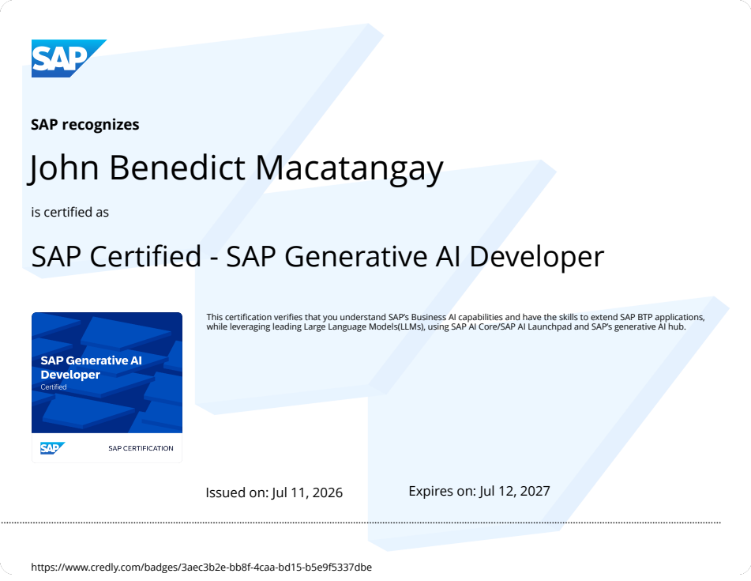
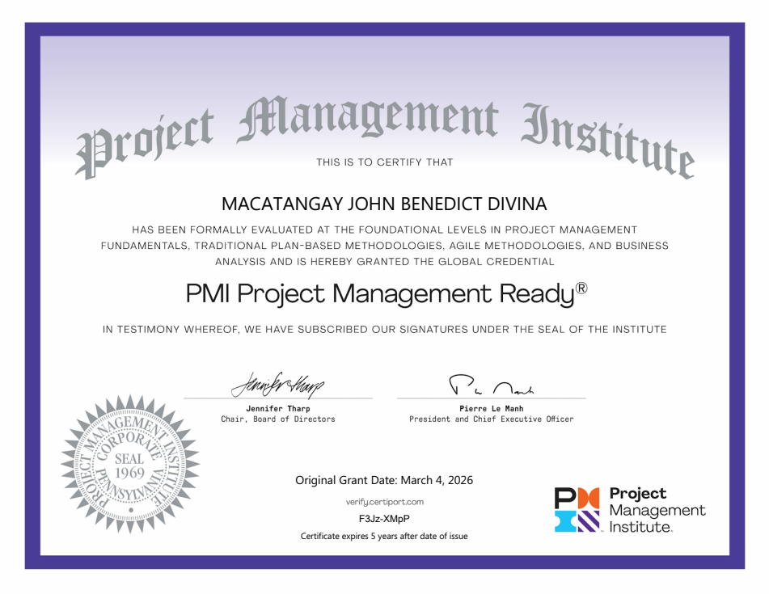
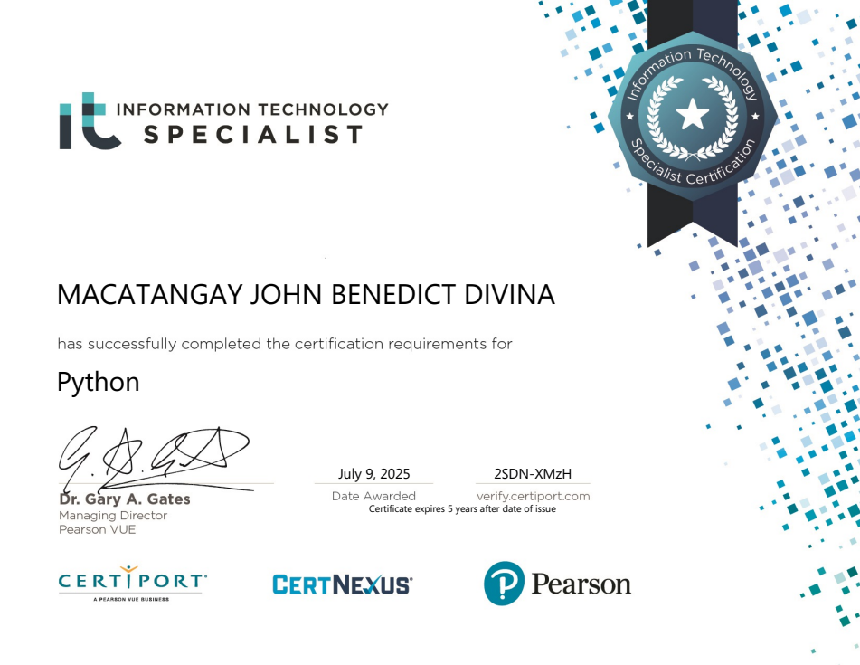
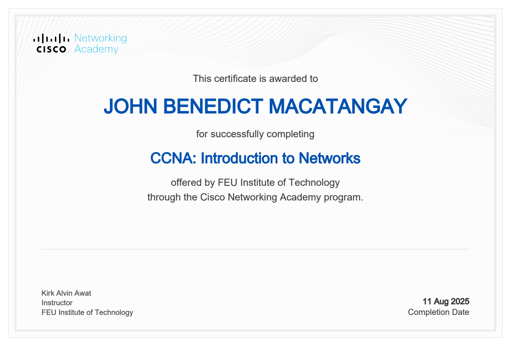

An automated weather pipeline and dashboard that make current conditions and trends easier to explore.
COMPUTER SCIENCE / DATA ENGINEERING / PHILIPPINES
JOHN BENEDICT MACATANGAY / MARIKINA CITY
JOHN BENEDICT MACATANGAY
BUILDING
WITH DATA.
I’m a Computer Science student building
Python and SQL pipelines that turn raw data
into reliable information people can use.
DOWNLOAD MY RESUME JOHN BENEDICT MACATANGAY / DOCXFROM RAW DATA
TO SOMETHING USEFUL.EXPLORE THE WORK ↓
TO SOMETHING USEFUL.EXPLORE THE WORK ↓
01 / SELECTED PROJECTSDATA, SOFTWARE & REAL USE CASES ↙
BUILT TO MAKE
DATA USEFUL.
From Philippine weather and EV infrastructure
to school document requests: practical projects
that connect data, software, and the people using them.
FILTER BY TOOL
3 projects
An ongoing project turning collected charging-station locations into an interactive map of the Philippines.
A four-person undergraduate thesis project for school document requests. My work spans student and admin screens and backend contributions.
No projects match these filters.
02 / CREDENTIALS & LEARNING
BUILDING SKILLS.
KEEPING CURIOUS.
04
CERTIFICATIONS & TECHNICAL TRAININGAlongside my Computer Science degree,
I’m developing foundations in Python,
generative AI, networking, and project management.
CERTIFICATIONS & TRAINING 2025 — 2026
All four certificates are shown below. Open any PDF for a full-size copy.
SAP Certified — SAP Generative AI Developer
SAP2026
Certification covering SAP Business AI and extending SAP BTP applications with large language models, SAP AI Core / AI Launchpad, and SAP’s generative AI hub.
Issued 11 Jul 2026 · Expires 12 Jul 2027
PMI Project Management Ready®
Project Management Institute2026
Foundational credential covering project management fundamentals, traditional plan-based methodologies, agile methodologies, and business analysis.
Granted 4 Mar 2026 · Five-year certificate term
Verification code: F3Jz-XMpP
IT Specialist — Python
Certiport / Pearson VUE2025
Certification recognizing completion of the Information Technology Specialist requirements for Python, supporting the programming skills I apply to data pipelines and automation.
Awarded 9 Jul 2025 · Five-year certificate term
Verification code: 2SDN-XMzH
CCNA: Introduction to Networks
Cisco Networking Academy · FEU Institute of Technology2025
Certificate of course completion for CCNA: Introduction to Networks, offered by FEU Institute of Technology through the Cisco Networking Academy program.
Completed 11 Aug 2025
A CLOSER LOOK AT THE WORK
FROM RAW.
TO RELIABLE.
My weather analytics project connects automated data collection with a database and dashboard. Each step helps turn scattered readings into information that is ready to explore.
SEE THE FEATURED PROJECTS ↗01 / COLLECT
Start with the source.
Collect Philippine weather data through an automated pipeline.
PYTHON02 / CLEAN
Make it consistent.
Clean the incoming data before it becomes part of the analytical dataset.
ETL03 / STORE
Give it structure.
Store the prepared data in a database for querying and analysis.
SQL / POSTGRESQL04 / EXPLORE
Make the data readable.
Bring current conditions and weather trends into a clear dashboard.
ANALYTICS / DASHBOARD03 / ABOUT METHE PERSON BEHIND THE PROJECTS ↙
CURIOUS ABOUT DATA.
DRIVEN TO BUILD.
I’m John Benedict, a Computer Science student at
FEU Institute of Technology, specializing in Software
Engineering. I’m seeking a Data Engineering internship
where I can help teams automate and trust their data.
MY TECHNICAL TOOLKIT
01Data engineeringPython, SQL, PostgreSQL, ETL pipelines,
data cleaning & workflow automation
data cleaning & workflow automation
02Tools & cloudGitHub Actions, Git, Docker,
Google Cloud & MySQL
Google Cloud & MySQL
03Web developmentFlask, FastAPI, React, TypeScript,
HTML, CSS & JavaScript
HTML, CSS & JavaScript
PySQLGitGCPTS
HOW I APPROACH PROJECTS
- 01UNDERSTAND THE USE CASE
Start with the information people need and the problem the software should solve.
- 02WORK WITH THE DATA
Collect, inspect, clean, and standardize the inputs.
- 03BUILD THE CONNECTIONS
Connect structured data, backend logic, and an interface people can use.
- 04CHECK THE EXPERIENCE
Use testing and feedback to understand how the system behaves.
- 05KEEP IMPROVING
Look for repeatable work to automate and skills to strengthen.
↗Turning messy data into reliable information.
MY FOCUS✳
EDUCATION2023 — 2028 EXPECTED GRADUATION
FEU Institute of Technology
BS Computer Science · Software Engineering
04 / EXPERIENCE & LEARNING
LEARNING.
THEN APPLYING.
Building for student communities, developing
my data skills, and learning through real projects.
FEB 2026 — NOW
Web Developer · SafeSpace
FEU Institute of Technology
Built and launched a live website where students can anonymously report microaggressions and find support. Designed a calm interface and an admin dashboard with live charts.
FLASK / SQLITE / CHART.JSMAY — SEP 2026
DataCamp Scholar
Data Engineering Pilipinas
Selected for a scholarship supporting Filipino data talent. Completed four months of hands-on Python, SQL, and data engineering courses through monthly learning missions.
SEP 2022 — JUN 2023
Student Researcher · Campus Navigation App
FEU High School
Co-developed a campus map app for new students, using surveys to guide the design. The project was nominated for presentation at the school Research Fair.
05 / LET’S CONNECT SEEKING A DATA ENGINEERING INTERNSHIP
LET’S BUILD
SOMETHING USEFUL.↗
Looking for an intern who is curious about data
and ready to contribute? I’d love to hear about your team.
✉
EXPERIENCE / PROJECTS / CERTIFICATIONSEMAILjabsmacatangay6@gmail.com
↗inLINKEDINJohn Benedict Macatangay
↗⌘GITHUBmr-jabs
↗◎
BASED IN THE PHILIPPINESMarikina City, Metro Manila
MEET YOUR
NEXT INTERN.
DOWNLOAD RESUME / DOCX ↓NEXT INTERN.